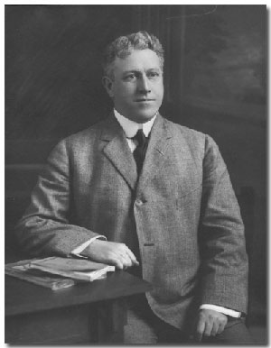
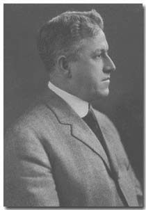
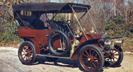
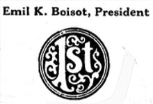
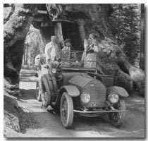
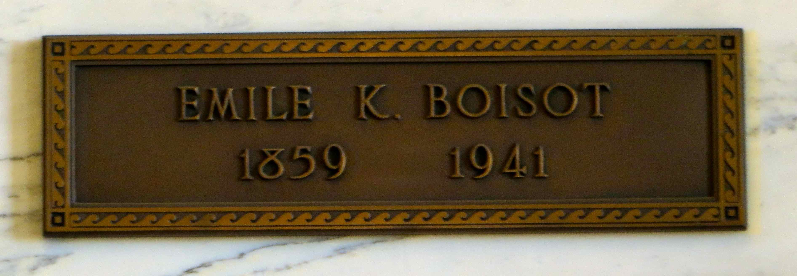

|
 Emile Kellogg Boisot was an American banker. Click here to see a Wikipedia article about Emile K. Boisot. Read the LocalWiki article about him. Click here to see a FamilySearch profile about Emile K. Boisot. |
|
| Emile
Kellogg Boisot 1859 - 1941 |
|
| February 26, 1859 | Emile Kellogg Boisot was born in Dubuque, Iowa on February 26, 1859. He was the son of Louis Daniel Boisot and Albertina Bush. |  Emile Kellogg Boisot1859 - 1941 |
| July 27, 1870 | The US Census lists Louis (47), Albertina (45), Louis (14), Emile (11), Edward B. (9), and Mary A. (5) in Dubuque, Iowa. Source: 1870 US Census. | |
| 1875-78 | Emile Boisot was employed in the German Bank of Dubuque, Iowa. Source: The history of the First National Bank of Chicago, pg 174. | |
| 1878 | The family moved to Chicago, Illinois. | |
| 1878 | He was employed in the bond department at the First National Bank of Chicago. | |
| 1880 | Emile K. Boiost (21 - Bank Clerk) and brother Louis Boisot (26 - Atty. At Law) of Chicago, Cook, Illinois, were listed in the 1880 US Census. Source: "United States Census, 1880," index and images, FamilySearch. | |
| November 4, 1891 | Emile K. Boisot married Mrs. Lillie Reid Moseman in Chicago, Illinois. Source: Marriage License #174985. | |
| August 21, 1892 | Louis Marston Boisot was born, who is the father of Barbara Boisot and grandfather of Debora Boisot. | |
| 1884 | BOISOT E. K. was listed as a bond teller at the First National Bank, Avenue House. Source: Evanston, Illinois City Directory, 1884. | |
| January 1, 1897 | He was promoted to be manager of the Foreign Exchange and Bond Department at the First National Bank of Chicago. | |
| August 28, 1897 | Marion Boisot was born in La Grange, Illinois. | |
| November 30, 1899 | Elizabeth Boisot was born. | |
| June 16, 1900 | The US Federal Census lists Emile K Boisot (40), Lily R. (39), Louis M. (7), Marion (2), Elizabeth (5 mo.), Elizabeth Reid (63), two servants Fannie Bell (55) and Maud Tansey (31), living in 6-WD Chicago, Cook, Illinois. Source: 1900; Census Place: Lyons, Cook, Illinois; Roll: T623 293; Page: 40B; Enumeration District: 1169. | |
| 1901 | Upon the separation of the foreign exchange and bond department into two district branches, he retained charge of the Bond Department. Source: The history of the First National Bank of Chicago, pg 174. | |
| January 1904 | Was appointed Vice-President and Manager of the First Trust & Savings Bank of Chicago. Source: The history of the First National Bank of Chicago, pg 174. | |
| 1905 | The Chicago directory listed him as Boisot, Emile K. in La Grange, Illinois. Source: The Chicago Directory Co. 1905. Page 503. |  1907 Studebaker |
| Nov 30, 1907 | E. K. Boisot, of La Grange, Illinois, owned a Studebaker with license plate 2147. Source: List of Automobile Licenses Issued by James A. Rose, Secretary of State of Illionis. | |
| March 26, 1908 | E.K. Bolsot and Mrs. Boisot of Chicago were at the Fairmont Hotel. Source: San Francisco Call, Volume 103, Number 117. | |
| December 12, 1909 | The Secretary of State at Sprringfield issued papers of incorporation to Emile K. Boisot (and others), Chicago members of the reorganization committee of the Chicago Consolidated Traction Company, authorising the organization of the United Railway Company. Source: The Sun., December 12, 1909, Page 7. | |
| December 27, 1909 | The final agreement was reached regarding the merger of several railway companies. Mr. Boisot was on the board of directors. Source: San Francisco Call, Volume 107, Number 27. | |
| Mr. Boisot was a member of the Chicago Stock Exchange. | ||
| April 18, 1910 | The US Federal Census lists Emile K Boisot (51), Lillie R. (50), Louis M. (17), and Marion (12), living in 6-WD Chicago, Cook, Illinois. Source: 1910 United States Federal Census. | |
| September 22, 1910 | It was anounced that Mr. Boisot would speak at the American Bankers' association convention in Los Angeles (October 3 to 7). E. K. Boisot, vice president First Trust and Savings bank, Chicago will discuss the "The Duties and Responsibilities of a Bond Department In Offering Securities to the Public." Source: Los Angeles Herald, Volume 37, Number 356, 22 September 1910. |
|
| April 3, 1915 | He and his family travled from Chicago to California staying at the Del Monte Hotel in Monterey. Source: San Francisco Chronicle (San Francisco, CA) Page: 32. |  First Trust & savings Bank |
| December 1915 | Emil K. Boisot was elected president of the First Trust and Savings Bank in Chicago, Illinois. Source: The Bankers Magazine, Volume XCI, New York. The Sentinel, v.024 no. 09, 1916. | |
| 1916 | His son, Louis Marston Boisot owned a large home in Waterloo, Iowa. |
 Emil and Lilly 1919 |
| July 4, 1919 | Emile and his wife visited Big Tree's in California. Source: Picture sent by grandson Emile K. Boisot. | |
| 1920 | There names are not listed in the 1920 US Federal Census. His brother, Louise Boisot is listed as age 60, wife Mary, and daughter Pauline as living in Lyons, Cook, Illinois. Source: 1920 US Census. | |
| June 30, 1920 | He travled to Multnomah, Oregon with his wife and daughter. Source: Oregonian (Portland, Oregon) Volume: LIX Issue: 18595 Page: 8 | |
| 1924 | Boisot moved to a large home (585 Belle Fontaine St.) in Pasadena, California. They had a cook, maid, and chauffeur. | |
| April 11, 1930 | The 1930 US Federal Census lists Emile K. Boisot (71), Lizzie (70), and two servants living in Pasadena, Los Angeles, California. Source: 1930 United States Federal Census. | |
| May 10, 1932 | Louis Marston Boisot, Pasadena, Eliot Callender, Pacific Grove, and Emil Kellogg Boisot, Del Monte, coinventors. all in California. Filed patent on June, 10, 1931. Serial No. 378,735, claiming a device for practising swinging a golf club. Source: Canadian Patent Office Record - Volume 60, Part 1 - Page 1149 | |
| February 19, 1936 | Took a six week trip to Honolulu, Hawaii. Source: San Francisco Chronicle (San Francisco, California) Page: 19 | |
| February 22, 1936 | Emil (76), Lillie (75), and Louis (43) were passengers sailing from Honolulu, Hawaii to the port of Los Angeles harbor. Source: "California, Los Angeles Passenger Lists, 1907-1948", index and images, FamilySearch. | |
| They had a summer home in Carmel Valley, California, which is where his daughter Marion and his wife lived. | ||
| August 27, 1939 | His wife, Lilly Reid Boisot, died in Carmel, California. | |
| April 6, 1940 | The 1940 US Federal Census lists Emile K. Boisot (81) and two servants living in Pasadena, Los Angeles, California. Source: 1940 United States Federal Census, ED 19-503, Page 12. | |
| February 1, 1941 | Boisot died in Pasadena, California. He was 81 years old. | |
| February 3, 1941 | The NY Times reported: "Emile Kellogg Boisot, Retired President of the First Trust and Savings Bank of Chicago, died yesterday at his home here, after a short illness, at the age of 81. While still active in Chicago's business and civic life, Mr. Boisot had maintained a Winter home here and on his retirement twenty years ago he took up permanent residence in Pasadena. He was a member of Valley Hunt Club, Midwick Country Club and Annanadale Golf Club, having been an active amateur golfer in his younger years. He leaves a son, Louis Marston Boisot, and a daughter, Mrs. Howard W. Ernest, both of Pasadena. His wife died a year ago." Source: New York Times, Feb 3, 1941, ProQuest Historical Newspapers, pg. 17 |  Emile Kellogg Boisot Forest Lawn Memorial Park |

Last updated: August 9, 2026

The text of this page is available for modification and reuse under the terms of the: Creative Commons Attribution-Sharealike 3.0 Unported License
and the GNU Free Documentation License (unversioned, with no invariant sections, front-cover texts, or back-cover texts).